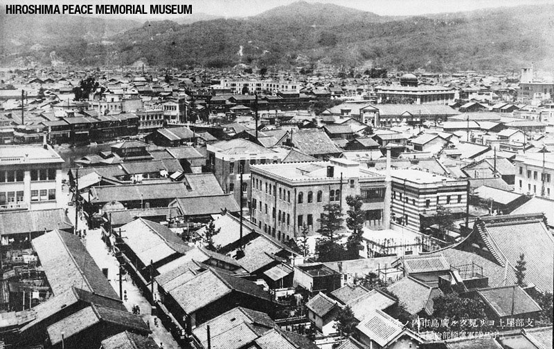
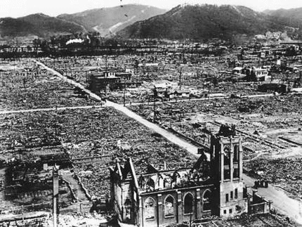
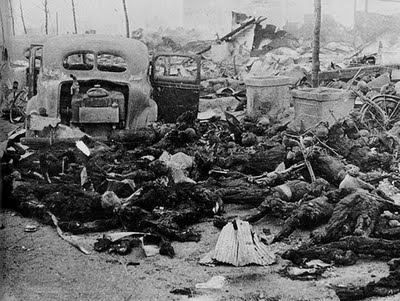
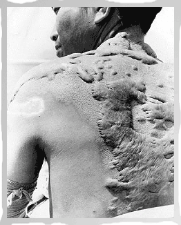
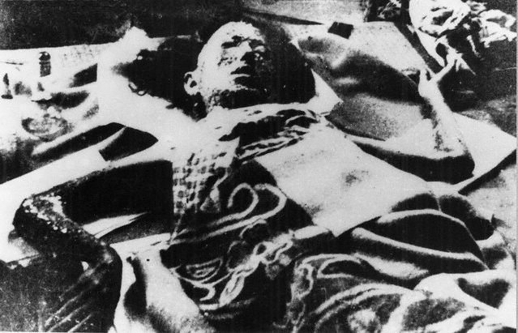
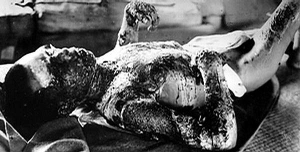

 
In an article that finally appeared August 19, 1945, on the front pages of the Chicago Tribune and the Washington Times-Herald, Trohan revealed that on January 20, 1945, two days prior to his departure for the Yalta meeting with Stalin and Churchill, President Roosevelt received a 40-page memorandum from General Douglas MacArthur outlining five separate surrender overtures from high-level Japanese officials. (The complete text of Trohan's article is in the Winter 1985-86 Journal, pp. 508-512.)
This memo showed that the Japanese were offering surrender terms virtually identical to the ones ultimately accepted by the Americans at the formal surrender ceremony on September 2 -- that is, complete surrender of everything but the person of the Emperor. Specifically, the terms of these peace overtures included:
• Complete surrender of all Japanese forces and arms, at home, on island possessions, and in occupied countries.
• Occupation of Japan and its possessions by Allied troops under American direction.
• Japanese relinquishment of all territory seized during the war, as well as Manchuria, Korea and Taiwan.
• Regulation of Japanese industry to halt production of any weapons and other tools of war.
• Release of all prisoners of war and internees.
• Surrender of designated war criminals. 1
|  | Few people can comprehend the extent of horrors that resulted from the use of atomic weapons. The civilians of Hiroshima were attacked early in the morning. Citizens were getting ready to go to their jobs, children were preparing for school and no one was aware of what was to come. When Colonel Tibbits dropped the bomb, the shock waves were so intense that they knocked the plane about in the sky. The area where the bomb hit; the center was as hot as the surface of the sun. People melted into walls, only the shadows of their charred images remained. |
| The plight of the survivors was even far worse. The skin peeled right off of the bones of the many who were still living. Hair fell out of their heads in clumps. Fetuses fell right out of the abdomens of pregnant women. Many others suffered third degree burns and long-term horrendous effects, such as keloid scars caused by thermal radiation. "President Truman steadfastly defended his use of the atomic bomb, claiming that it "saved millions of lives" by bringing the war to a quick end. Justifying his decision, he went so far as to declare: "The world will note that the first atomic bomb was dropped on Hiroshima, a military base. That was because we wished in this first attack to avoid, insofar as possible, the killing of civilians." |  |
|
This was a preposterous statement. In fact, almost all of the victims were civilians, and the United States Strategic Bombing Survey (issued in 1946) stated in its official report: "Hiroshima and Nagasaki were chosen as targets because of their concentration of activities and population." If the atomic bomb was dropped to impress the Japanese leaders with the immense destructive power of a new weapon, this could have been accomplished by deploying it on an isolated military base. It was not necessary to destroy a large city. And whatever the justification for the Hiroshima blast, it is much more difficult to defend the second bombing of Nagasaki." |  |
|  | After the July 1943 firestorm destruction of Hamburg, the mid-February 1945 holocaust of Dresden, and the fire-bombings of Tokyo and other Japanese cities, America's leaders -- as US Army General Leslie Groves later commented -- "were generally inured to the mass killing of civilians." 2 |
"The experiment has been an overwhelming success," President Harry S. Truman reportedly told his shipmates upon learning that the U.S. military had dropped the atomic bomb on Hiroshima.
"After the bombings, Japanese filmmakers attempted to document the horror that the atomic bombs left in Japan. Recognizing this as a potential threat, the U.S. military seized all Japanese footage and then placed an order banning all future filming." 3
Hiroshima and Nagasaki fact and fiction:
• Lie: Leaflets were dropped on Japanese cities to warn civilians to evacuate.
• Truth: Leaflets were dropped after we bombed Hiroshima and Nagasaki.
• Lie: Our use of the atomic bombs shortened the war.
• Truth: The Japanese were looking for peace when they returned from the Potsdam Conference on Aug. 3, 1945, three days before the U.S. military bombed Hiroshima.
• Lie: We bombed Hiroshima, which was an important Japanese Army base.
• Truth: We bombed the city center of Hiroshima, which had a population of 350,000.
• Truth: Only four of the 30 targets were, in fact, military in nature. 4
In truth, the atomic bombings of Hiroshima and Nagasaki were experiements, masterminded, and advocated by Jews.
"We may never actually have to use this atomic weapon in military operations as the mere threat of its use will persuade any opponent to surrender to us."
–Chaim Weizmann [Jew]
References:
1 Institute for Historical Review Article: Was Hiroshima Necessary? Why the Atomic Bombings Could Have Been Avoided by By Mark Weber
2 Ibid.
3 Ibid.
3 www.naturalnews.com/019176_atomic_bomb_Hiroshima